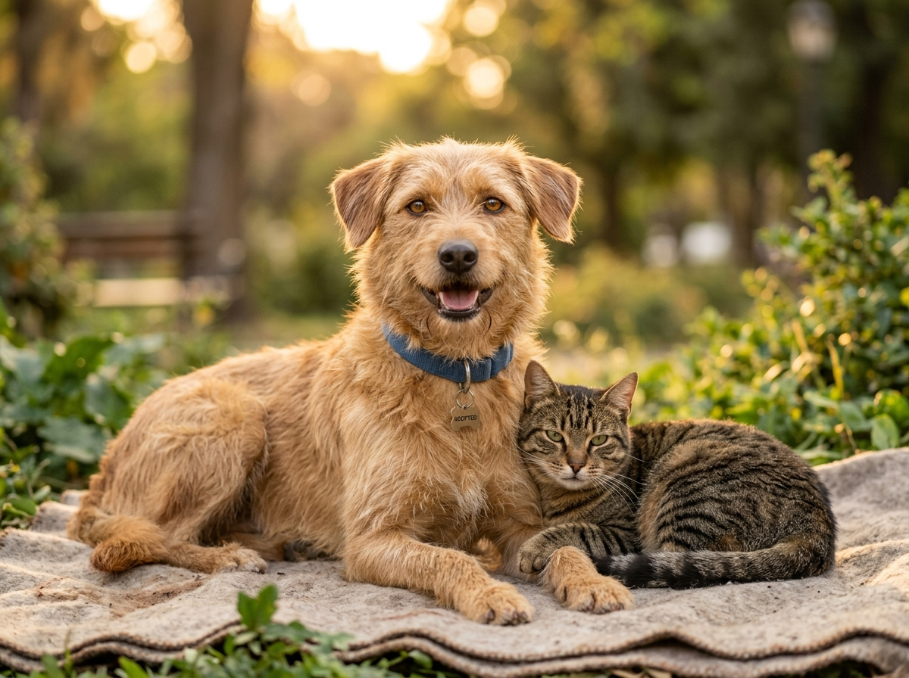
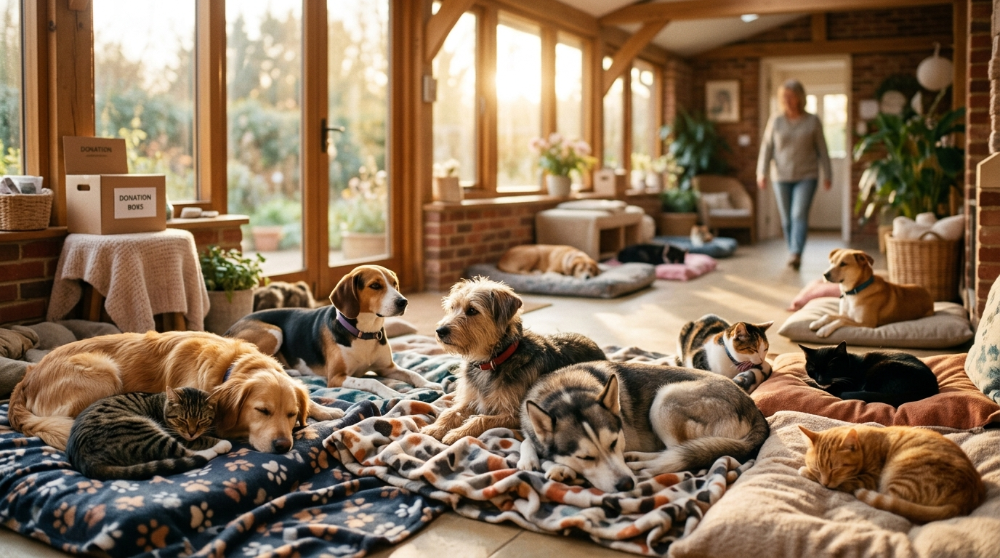

Report animals in distress, mobilize nearby rescue teams and coordinate every case through treatment and recovery — from one connected platform.

PawReach gives every person involved in animal rescue a shared operating system.
Photo, GPS location, condition details — rapid case creation from any mobile device.
Automatically identify nearby rescuers and veterinary hospitals with intelligent routing.
Complete treatment records, medical notes, and case history available to veterinary partners instantly.
Monitor healing progress and match animals with suitable foster caregivers or adoption pathways.
Reporters, volunteers, and organizations receive real-time notifications throughout each rescue.
Response time, outcome rates, and hotspot analytics for data-driven rescue operations.
From one report to a second chance.
Photo, GPS location, and basic condition — submitted in under a minute from any device.
AI-assisted and rule-based triage determines urgency and assigns a priority category.
Nearby suitable responders and veterinary resources are identified and notified.
Treatment, follow-up, foster, release or adoption — tracked until the case is closed.
Real-time visibility into every active case — from initial report through treatment and recovery. Monitor responder positions, dispatch times, and case outcomes across your entire network.
PawReach adapts to the workflow of each person involved — from the citizen who reports to the organization that coordinates.
PawReach transformed how we coordinate field rescues. Before, we relied on WhatsApp groups and phone calls. Now every case is tracked, every volunteer knows their assignment, and we can see response times improve week over week.
The case tracking and medical records integration make collaboration with rescue teams seamless. I can see an animal's full history the moment they arrive — injury details, triage notes, photos from the field. It saves critical time.
PawReach has strengthened our entire network. We can see the impact in real numbers — faster response, more animals getting treatment, better coordination with foster homes. The analytics help us make the case for more resources.
Get the right responder to the right animal quickly with intelligent dispatch and real-time updates.
Tailored workflows for citizens, rescuers, veterinarians, NGOs, and municipal administrators.
Optimized for areas with unreliable connectivity — because rescues happen everywhere.
Secure data handling, controlled location visibility, and complete action history for accountability.

A report should be the beginning of care — not the end of a complaint.
Bring citizens, rescuers, veterinary teams and recovery partners into one coordinated network.